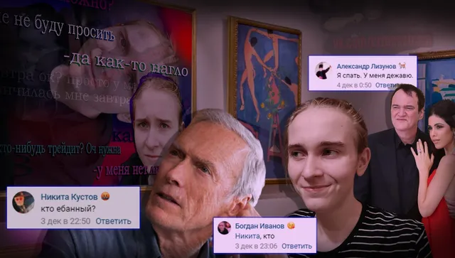
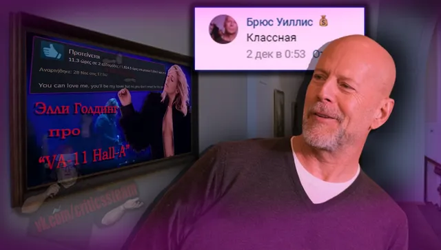
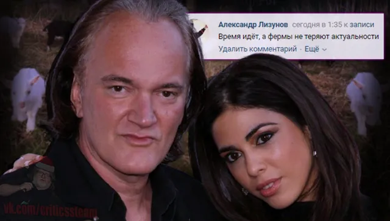
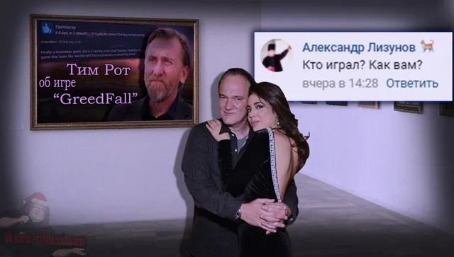
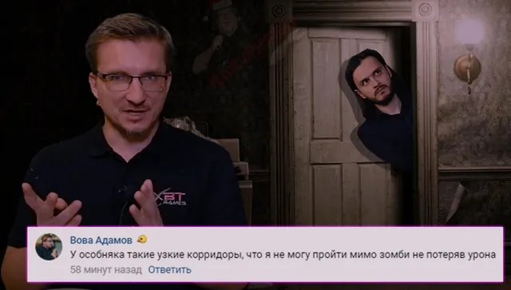

Без рубрики
ВКонтакте
Сегодня [https://vk.com/@criticssteam-sistema-titulov|Титул] получают:
6 декабря 2020 · №831 в выгрузке стены · оригинал во ВКонтакте ↗
![Сегодня [https://vk.com/@criticssteam-sistema-titulov|Титул] получают:](../img/vk/831_0t.webp)





🙃Вот и подходит время, выделенное на воскресенье, к своему световому завершению, а значит пришло время ваших комментариев!
» Сегодня [https://vk.com/@criticssteam-sistema-titulov|Титул] получают:
🌟 [id12840761|Александр Лизунов]
🌟 [id347679904|Андрей Язин]
🌟 [id491132613|Брюс Уиллис]
🌟 [id284440935|Никита Лагуткин]
🌟 [id119602395|Вова Адамов]
⭐ [id183797983|Никита Кустов]
================
Всем спасибо за комментарии, но пишите больше!
» Сегодня [https://vk.com/@criticssteam-sistema-titulov|Титул] получают:
🌟 [id12840761|Александр Лизунов]
🌟 [id347679904|Андрей Язин]
🌟 [id491132613|Брюс Уиллис]
🌟 [id284440935|Никита Лагуткин]
🌟 [id119602395|Вова Адамов]
⭐ [id183797983|Никита Кустов]
================
Всем спасибо за комментарии, но пишите больше!